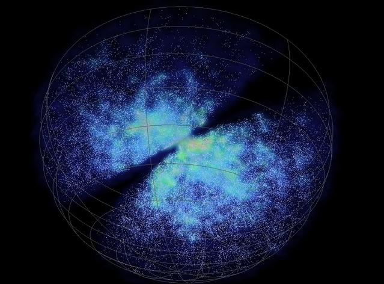

The 6dF Galaxy Survey (6dFGS) has determined the velocities of over 125,000 galaxies in the southern sky (|b|>10 deg) between 2001 and 2006. The survey covers 5.2 steradians or 41% of the southern hemisphere. The median redshift of the survey is 0.053. For a sub-sample of early-type galaxies, velocity dispersions, distances and peculiar velocities (deviations from a pure Hubble flow) are found, allowing galaxy masses and bulk motions to be calculated. The survey covers more than ten times the sky area of the successful 2dF Galaxy Redshift Survey (2dFGRS) and almost twice that of the Sloan Digital Sky Survey.
Above is a fully interactive wedge diagram showing the 3-d locations (RA, Dec., z) of galaxies from the 6dF Galaxy survey. 49377 galaxy positions, with 0 <= v <= 15 000 km/s and Dec. <= 0 deg., are plotted as white dots. Declination lines are drawn at intervals of 15 degrees.
Redshift maps of the southern local universe with z < 0.1 or cz < 30,000 km/s are produced, showing nearby large-scale structure. Notable structures include the Centaurus, Fornax, Hydra and Sculptor walls and the Shapley, Pisces-Cetus, Sculptor, Pavo-Indus, Horologium-Reticulum and Hydra-Centaurus superclusters.

Credit: Swinburne
The 6dF name is a reference to the Six-degree Field instrument, a multi-object spectrograph that uses optical fibres and robotic positioning technology on the Anglo-Australian Observatory’s UK Schmidt Telescope. Very small glass prisms at the ends of the optical fibres allows up to 150 galaxies to be observed at the same time. Spectra are recorded and the velocities of the galaxies can be determined. The input catalogue consisted of some 175,000 individual objects – principally K-band (K<13) near-infrared selected galaxies from the 2MASS Extended Source Catalogue.